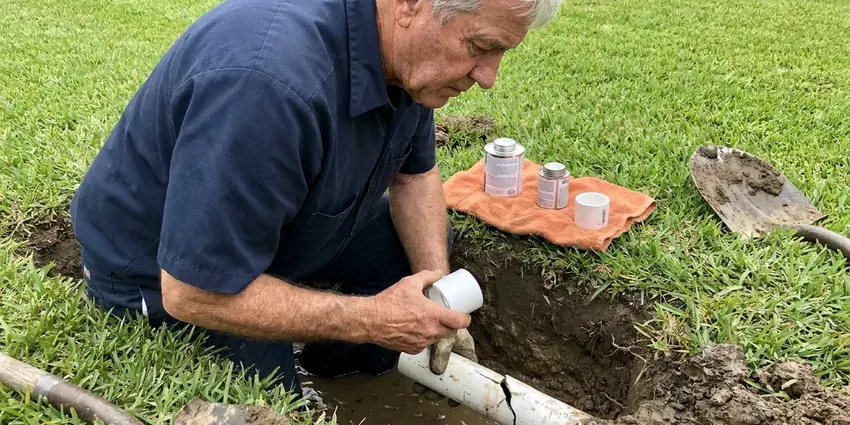

Sewer Line Inspection in Dayton, OH
Our sewer inspections in Dayton, OH come with recorded video and depth marks, so any repair is targeted.
- Depth Locating With a Sonde
- Licensed Plumbers
- Root and Crack Detection
- Written Findings Included

Need a Sewer Camera Inspection in Dayton, OH?
Schedule a scope and keep the recorded video of your sewer lateral.
Sewer Line Inspection in Dayton, OH
HRL Plumbing handles sewer inspections for buyers, sellers, property managers and homeowners with repeat drain trouble. Everyone gets the same deliverables. That means a recorded video, a written summary and priced repair options when something needs fixing.
Our expertise includes:
- Corrosion checks on cast iron
- Surface locating of pipe damage
- Root intrusion and crack detection

Additional Plumbing Maintenance Services in Dayton, OH
Our maintenance and specialty plumbing services in Dayton, OH protect your home year-round and extend the life of every system.


Customers
Why Choose HRL Plumbing for Sewer Line Inspection in Dayton, OH?
Invisible problems are the expensive kind, since a sewer can look fine until it causes a backup and repairs can cost thousands. Advance notice saves money. An inspection shows the real condition of the line, so you can plan the work on your schedule instead of in the middle of a mess.
- Plain Talk, Findings are explained in everyday language, with sensible next steps.
- Clear Video, Cracks, roots and offsets are easy to see in HD.
- Early Warnings, Small cracks and light roots show up early, before they cause a backup.
Citywide Coverage
No matter where you live in Dayton, we bring the same equipment: HD push camera, sonde receiver, marking paint and a cable machine. Long runs are no problem. Our cameras reach well past 100 feet, out to the public sewer main.
Experienced Team
Our team has worked on every sewer material found in Ohio homes, including Orangeburg, clay, cast iron, ABS and PVC. Every material wears its own way. They can give a realistic estimate of remaining life, which is the question most owners ask.
Safety-First Approach
Existing cleanouts or vents are our way in whenever possible, so the scope itself never involves cutting into a wall, floor or yard. A few houses lack one. Any cleanout we add meets the plumbing code adopted in your city or county.
Trusted Certified Dayton Plumbing Services Professionals
At HRL Plumbing, we take pride in licensed, certified plumbing services throughout Dayton, OH. Those papers on the wall mean something. Our plumbers hold recognized industry credentials, and they follow strict safety and quality rules on every repair, installation and maintenance call we run.
Call Us Now PHCC Plumbing Contractor Recognition
PHCC Plumbing Contractor Recognition Better Business Bureau (BBB) Accreditation
Better Business Bureau (BBB) Accreditation Angi Certified Pro
Angi Certified Pro ISO 9001 Quality Management Certification
ISO 9001 Quality Management CertificationSewer Line Camera Work in Dayton, OH
Commercial Sewer Inspections in Dayton
Restaurants, apartment buildings and offices in Dayton put heavy loads on their sewer lines. Grease is the big one. HRL Plumbing scopes larger-diameter commercial lines, working after hours if needed so customers and tenants are not disturbed, and documents grease buildup, root intrusion and structural defects.

Sewer Scopes Before Buying in Dayton, OH
A sewer scope costs a few hundred dollars. A sewer replacement can cost many thousands. Before buying in Dayton, a camera run reveals the cracks, roots or collapses that would otherwise become your bill after closing, and the video gives you something solid to bring to the negotiation.
Independent Post-Repair Inspections in Dayton, OH
Another company did your sewer repair? We can check it. HRL Plumbing scopes the new pipe to confirm proper installation, secure connections and no debris left in the line, so you know from a second set of eyes whether the work meets code in Dayton, OH.
Home Buyer Sewer Inspection in Dayton
Real estate timelines move fast. We schedule pre-purchase inspections quickly, so the scope can reveal roots, cracks or bellies while you still have time to negotiate. You get a video and a written report that fits most real estate timelines.
Locating Lost Items and Mapping Lines in Dayton, OH
Dropped a ring down the drain? The camera can often find it. We also use the sonde in the camera head to trace the full route of your sewer line, and that is handy for older houses with no surviving plans in Dayton, so you have a map before building a fence, patio or addition.
Cast Iron and Clay Pipe Assessments in Dayton
Many older homes have cast iron drains under the floor and clay laterals outside. Neither ages well. Cast iron rusts through along the bottom, and clay joints shift until roots get in, and our camera inspection shows how far along each section is so you can plan repairs before a failure forces the issue.
Sewer Line Locating and Depth Marking in Dayton, OH
Every repair starts with knowing where the line goes. Depth matters too. Our camera carries a sonde transmitter that we trace from above ground with a receiver, then we flag or paint the route and problem spots so the dig or liner crew starts in the exact right place.

Camera Inspection for Blockages in Dayton
A drain that slows and then stops usually has something sitting in the line. Our camera tells us what. Grease, wipes, scale and roots all look different on screen, and knowing which one it is lets us clear it the right way, with a cable machine for roots and a jetter for grease, without digging anything up.
Local Sewer Inspections in Dayton, OH
Pipe materials and soil conditions change across different parts of town around Dayton, so an older block with clay laterals and a newer subdivision with PVC need different expectations. That shapes our read. You hear what is typical for your street and what is a real problem.
Living and working around Dayton keeps our scheduling flexible. After the inspection, our plumbers can often start any repair the same week, or schedule it to fit your closing date.
HRL Plumbing at a Glance
- Licensed and insured plumbers serving Dayton, OH
- 24/7 emergency service with same-day scheduling
- Upfront, flat-rate pricing before work begins
- 4.9-star rated by 673+ Ohio customers
Dayton Map
Dayton Information
- Population
- 135,512
- Area codes
- 937/326/513
- Service area
- Dayton and communities within 40 miles
- Nearby
- Kettering, Middletown, Springfield, Hamilton
Mature trees send roots toward sewer joints, while moving soil pulls the joints apart, which is why camera inspections matter in Dayton, OH.
Talk to a Plumber
Call HRL Plumbing for honest, reliable plumbing from people who know the trade in Dayton, OH.
Our Specialized Plumbing Services in Dayton, OH
At HRL Plumbing, we handle the full list of plumbing services across Dayton, OH. From leak detection to full system installs, our team works fast and charges fair prices on homes and commercial properties alike. Here are the core services we offer:


Our Sewer Inspection Steps in Dayton, OH
We access the line, record it, mark problems and review it with you. That is the whole process in Dayton, OH.
Schedule a Visit
Call (740) 449-7505 to set up your sewer scope. We confirm the price and the appointment time.
Access the Line
The tech finds a cleanout or vent at your Dayton home and sets up the camera.
Record the Run
We record the camera run all the way to the main, noting each problem and its location.
Frequently Asked Questions About Sewer Line Inspection in Dayton
Expect $200 to $500 in Dayton, OH. Longer lines cost more. Access, the complexity of the system and extras like full route mapping or after-hours service all affect the final number, and we quote it before booking.
Older pipe or trees near the line justify an inspection every couple of years. Repeat backups need one right away. Many businesses inspect once a year.
Consider one if you have recurring clogs, slow drains, sewer odors, gurgling or a lush green strip in the yard. Home buyers should get one. Before you buy an older home or build over the line, a scope is cheap insurance in Dayton.
Barely at all. Our technicians use an existing cleanout, which is a capped pipe usually found outside near the foundation or in a basement or garage. There is typically no digging and no water shutoff for more than a few minutes.
Not at all. We go in through an existing cleanout. Floors stay covered, nothing gets dug up and the cable is cleaned as it comes out.
Rental cameras usually cannot reach the main or locate defects. Interpreting video is a skill. A professional inspection gives you reliable results and a report you can actually use.
Root intrusion, cracks, breaks, corrosion, offsets, grease, debris, sagging sections and even lost jewelry show up on the camera. Very little hides from it. You get a recorded look inside the pipe that you can share with an agent or insurer.
Usually not. Inspecting changes nothing in the system. Repairs or a new cleanout might need a permit, which we pull for you in Dayton, OH.
Hear From Customers Who Hired Our Plumbing Experts

Greg S.
I manage a small strip center with six tenants. HRL Plumbing handles our annual backflow testing and fixed a recurring clog in the shared sewer line that had been backing into the nail salon. Their reports come in clean and on time.
Commercial Plumbing · Middletown, OH
Angela D.
Our sump pump quit during a storm and the water was an inch from the basement carpet. HRL Plumbing put in a new pump with a battery backup that same evening. We have had two heavy rains since. It kicked on both times.
Sump Pump · Dublin, OHMark T.
The floor drain in our office break room backed up every few weeks. The plumber ran a cable, then put a camera down and found roots at a joint about thirty feet out. Seeing it on the screen made the decision easy.
Drain Cleaning · Kettering, OH
James P.
Our restaurant had a slow leak at the hand sink that was rotting the cabinet base. HRL Plumbing came in at six in the morning before prep, replaced the trap and both supply lines, and was packed up before my first cook clocked in.
Commercial Plumbing · Cincinnati, OH
Daniel K.
A pipe burst in the garage ceiling at 11 at night. Someone answered on the second ring, and the plumber was in my driveway about fifty minutes later. He shut off the main, cut out the split section, and had water back on before 2 am.
Emergency Plumbing · Kettering, OH
Lisa C.
Water was pouring out from under the washing machine on a holiday weekend. HRL Plumbing talked me through closing the valves over the phone and had a plumber at the house within ninety minutes. It was a burst fill hose.
Emergency Plumbing · Cincinnati, OH